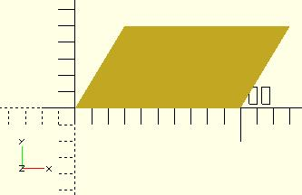
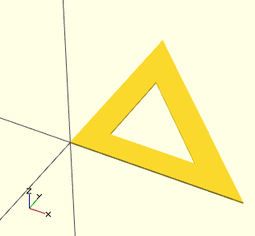
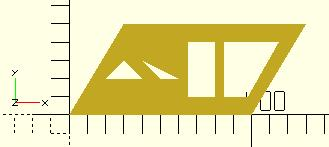

Creates a multiple sided shape from a list of x,y coordinates. A polygon is the most powerful 2D object. It can create anything that circle and squares can, as well as much more. This includes irregular shapes with both concave and convex edges. In addition it can place holes within that shape.
polygon(points = [ [x, y], ... ], paths = [ [p1, p2, p3..], ...], convexity = N);
Parameters
defaults: polygon(); yields: polygon(points = undef, paths = undef, convexity = 1);
Example no holes

equivalent scripts for this example polygon(points=[[0,0],[100,0],[130,50],[30,50]]); polygon([[0,0],[100,0],[130,50],[30,50]], paths=[[0,1,2,3]]); polygon([[0,0],[100,0],[130,50],[30,50]],[[3,2,1,0]]); polygon([[0,0],[100,0],[130,50],[30,50]],[[1,0,3,2]]); a=[[0,0],[100,0],[130,50],[30,50]]; b=[[3,0,1,2]]; polygon(a); polygon(a,b); polygon(a,[[2,3,0,1,2]]);
Example one hole

equivalent scripts for this example polygon(points=[[0,0],[100,0],[0,100],[10,10],[80,10],[10,80]], paths=[[0,1,2],[3,4,5]],convexity=10); triangle_points =[[0,0],[100,0],[0,100],[10,10],[80,10],[10,80]]; triangle_paths =[[0,1,2],[3,4,5]]; polygon(triangle_points,triangle_paths,10);
The 1st path vector, [0,1,2], selects the points, [0,0],[100,0],[0,100], for the primary shape. The 2nd path vector, [3,4,5], selects the points, [10,10],[80,10],[10,80], for the secondary shape. The secondary shape is subtracted from the primary ( think difference() ). Since the secondary is wholly within the primary, it leaves a shape with a hole.
Example multi hole
[Note: Requires version 2015.03] (for use of concat())

//example polygon with multiple holes a0 = [[0,0],[100,0],[130,50],[30,50]]; // main b0 = [1,0,3,2]; a1 = [[20,20],[40,20],[30,30]]; // hole 1 b1 = [4,5,6]; a2 = [[50,20],[60,20],[40,30]]; // hole 2 b2 = [7,8,9]; a3 = [[65,10],[80,10],[80,40],[65,40]]; // hole 3 b3 = [10,11,12,13]; a4 = [[98,10],[115,40],[85,40],[85,10]]; // hole 4 b4 = [14,15,16,17]; a = concat (a0,a1,a2,a3,a4); b = [b0,b1,b2,b3,b4]; polygon(a,b); //alternate polygon(a,[b0,b1,b2,b3,b4]);
convexity
The convexity parameter specifies the maximum number of front sides (back sides) a ray intersecting the object might penetrate. This parameter is needed only for correct display of the object in OpenCSG preview mode and has no effect on the polyhedron rendering.

This image shows a 2D shape with a convexity of 4, as the ray indicated in red crosses the 2D shape a maximum of 4 times. The convexity of a 3D shape would be determined in a similar way. Setting it to 10 should work fine for most cases.
Created with the Personal Edition of HelpNDoc: Free HTML Help documentation generator